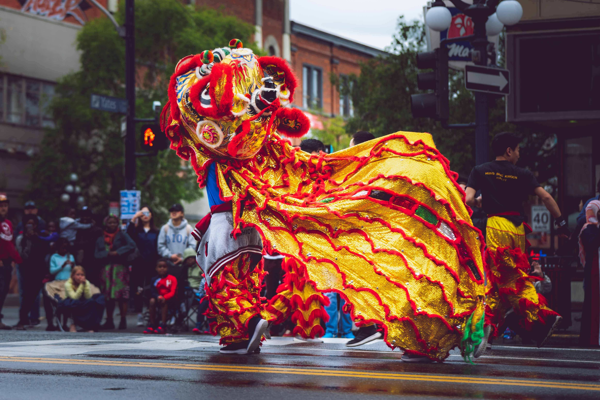
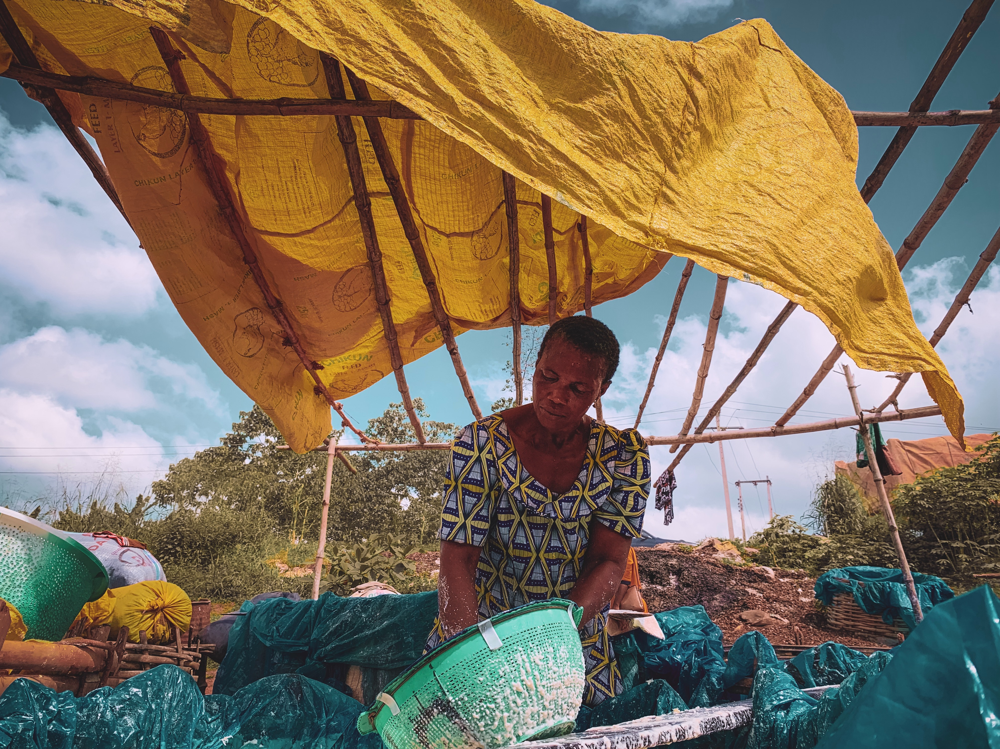
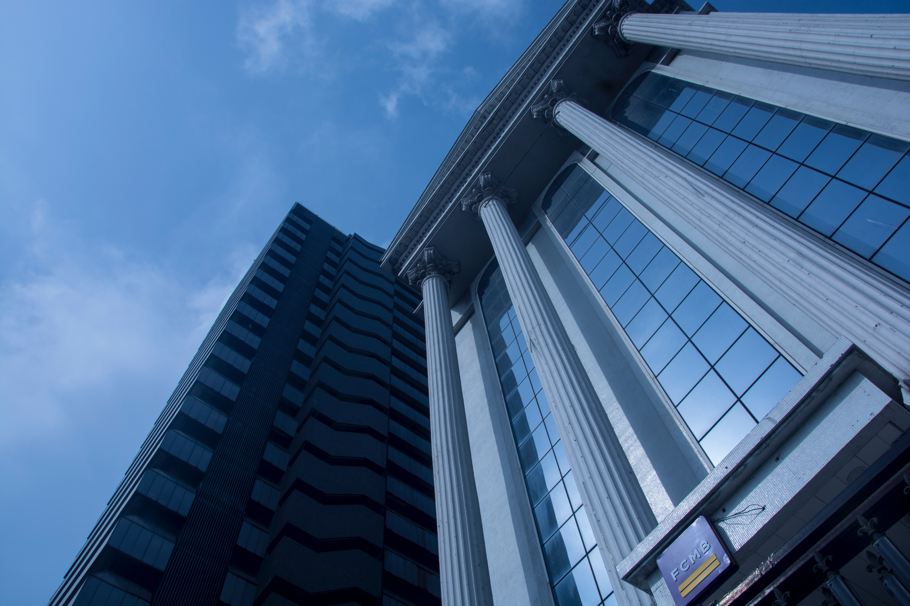
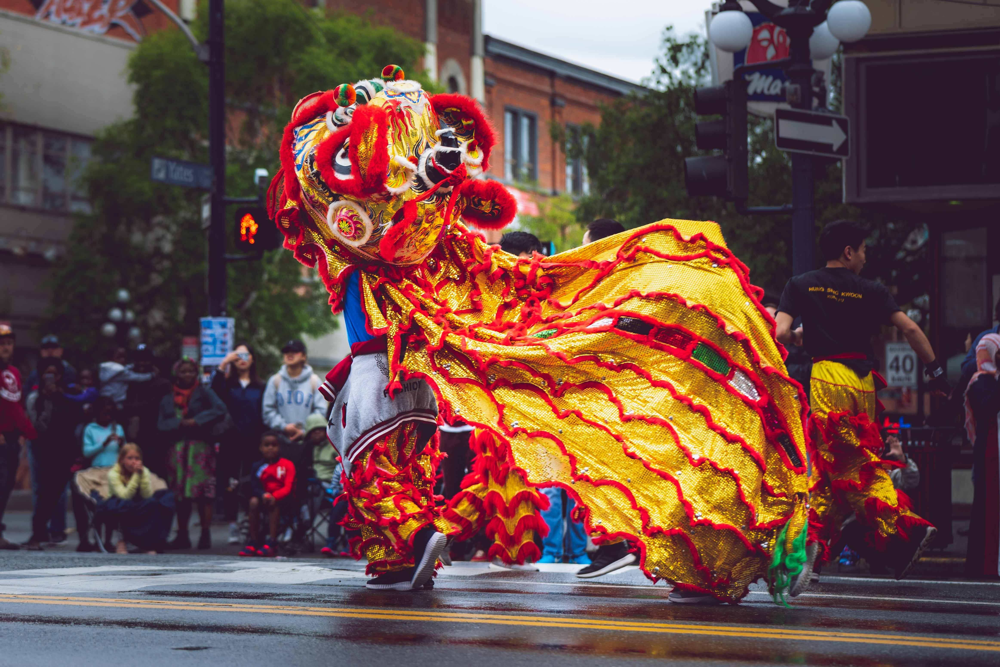
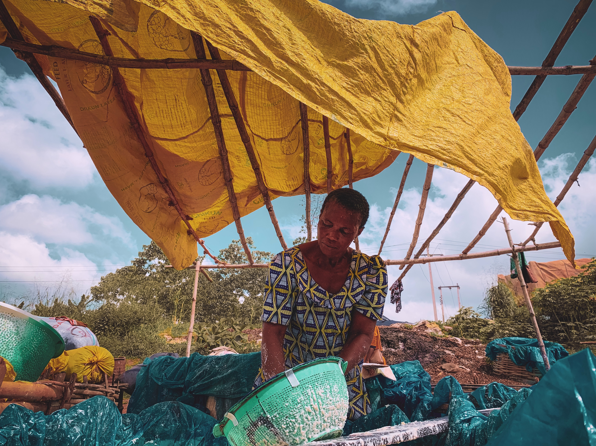
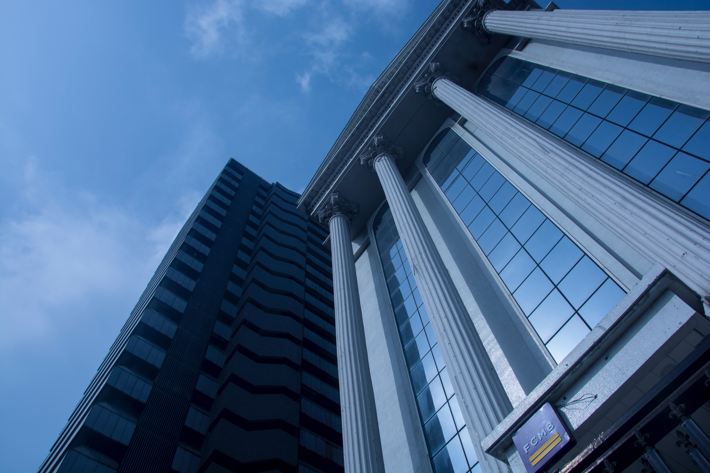
Our History
Nigeria na one of the countries wey you fit locate for West Africa.Nigeria na country wey don dey for about 59 years. We get our independence for 1960.Nigeria get 36 states and capitals.Nigeria get oil and other yanfo yanfo raw materials.
Naija-The Only Giant for Africa
Nigeria na one very powerful country : as the people wey get plenty citizens for their country for the whole continent
almost every fifth person wey come from Africa na Nigerian–
so Nigeria dey plenty pass so many countries.
But recently, the overpopulation don make kasala' burst oo: petrol and other important oil don cost oo;and it dey affect Nigerians.
But Lasgidi, the happening city for Nigeria, dey very popular and successful: with the correct technology companies wey dem don set , fine restaurants to chop beta beta food and club to go flex.We also get some mad art places wey dey showcase our culture and,Lagos na one of the biggest cities for Africa.
Wetin |We Dey Do
As we be ogbonge website wey dey do plenty work for different people,we get some of those work to show you.As you dey look dem,make your choice to visit anyone wey you like.
Look More
Here na som e of the place wey you go like visit for Nigeria.
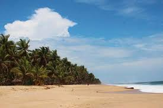 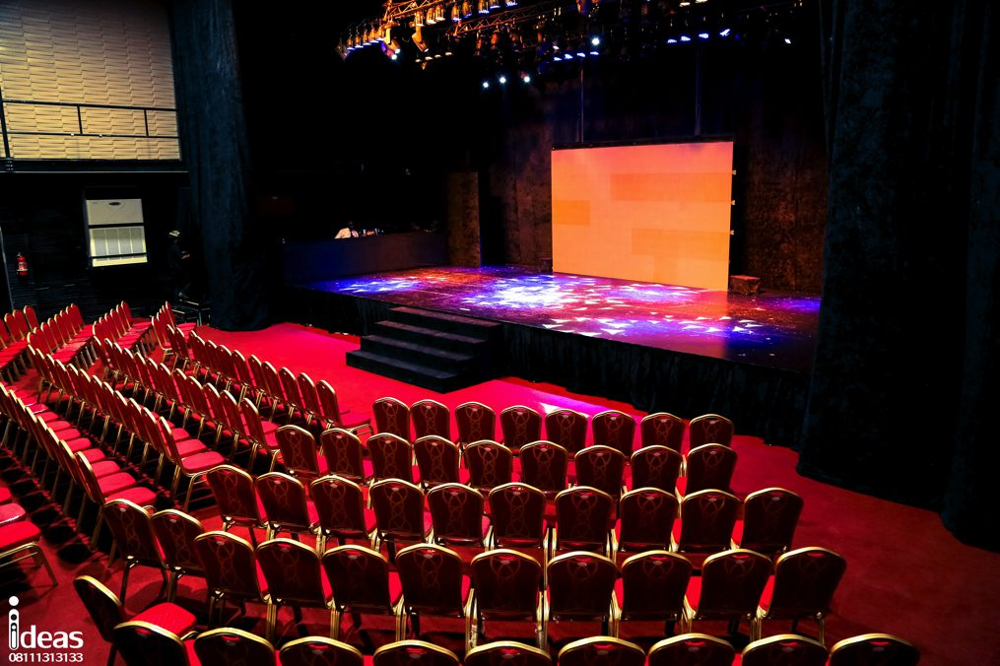 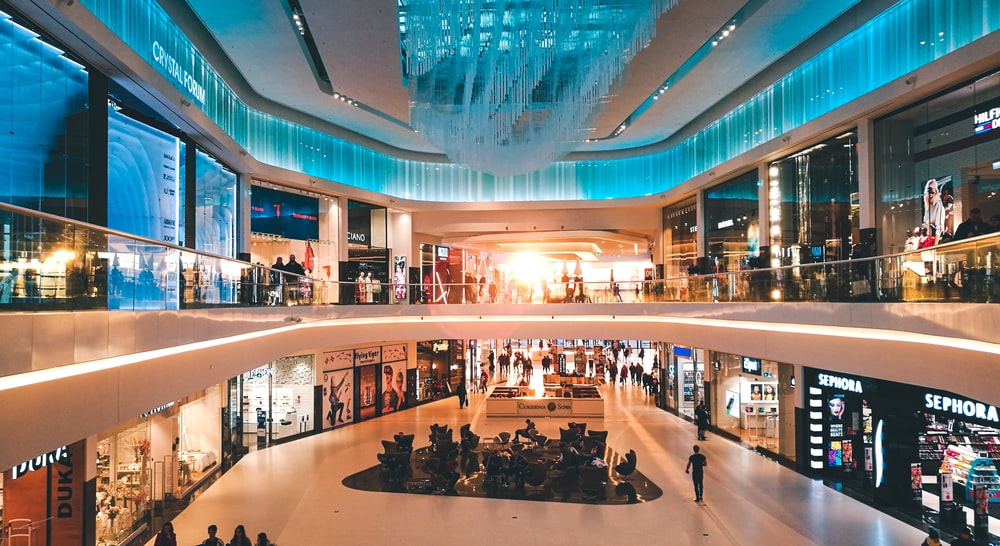 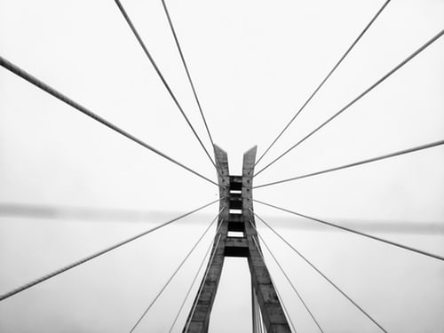 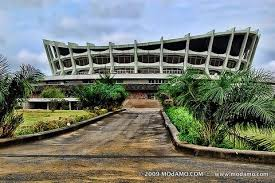
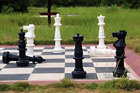
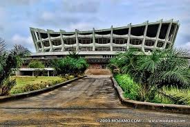
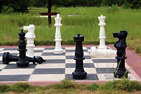
 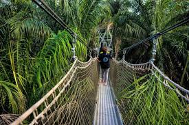
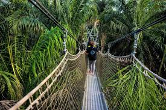
Our Yarn
For Lagos, Nigeria, we get plenty tourist centres wey dey attract people. I go suggest some of this places for you,so that you go visit them anyone wey you like pass.And no fear sey these places no dey legit o; dem be certified,government approved places. Look some of dem for down:
Lekki Conservation Centre
Lekki Conservation Centre na one fun place of nature.The centre get many animals wey dem dey keep for visitors.Some of these animals include:Monkeys,crocodiles,snakes,
tortise etc and these animals don live tey tey.Dem keep some of dem for wetin oyibo dey call research.
Ikeja City Mall
Ikeja Shopping Mall na big shopping centre wey you fit go buy anything wey you want from.The shop get other fun places like:Park,restuarant, bar,place wey dem dey watch film. Ikeja City Mall na place wey family people dey go flex. ICM is the choice retail destination in Lagos with a wide selection of national and international tenants.
National Theatre, Igammu
The National Theatre wey we get for Lagos na place wey dem dey store ancient things for.For this kain place, you fit get many things from our grandpapa dem wey don die tey tey.When you go that place you go see swimming area wey big like wey dem dey play olympic.Dem also get place for basketall,table tennis, wrestling and wey dem dey box.
Look More
You fit get boat wey you go use go there from different places.Some of these places include:Marina, Tarzan Marine for Victoria Island and Mekwe Jetty.You fit get many things from our grandpapa dem wey don die tey tey.When you go that art shop, you go learn 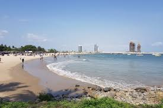
Look More
Dem be dey use the place for football match for 2001.Dem even don play many world cup for there,including the African Cup of Nation for 1980 , the 2000 African Cup of Nations final and FIFA World Cup. Na also wetin dem use as the stadium for the 1973 All-Africa Games. But dem abandon am for 2004.
Look More
Terra Kulture na one of my favorite places for Lagos – I love the books wey dem get for their library,the correct food wey dem dey serve people as e dey hot for their restaurant, the ogbonge'décoration wey full ground, the fine fine pictures wey dem dey hang for wall for there,the way the place dey jam-pack with people on Sunday andthe one weysweet my belle pass na to go the gallery bacause e dey talk about my country.– Chimamanda Adichie.
Look More
The shop get big space for people to park their motor. The Shopping Centre get up to 100 shops with different owners wey come fro different countrieswey dey sell fine fine things.People wey dey come there dey enjoy themselves very well bacuse dem dey enjoy a comfortale,clean and safe place.Plus,you fit buy anything wey you want for that same place.
Look More
Dem also get many interesting things to do for there.Dem also get many floor games wey dey play for that place.Some na chess,snake and ladder,and many other things.When you visit there,you fit get plenty delicious meals to use take jollificate yourself.
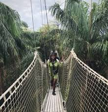Hard Rock Cafe
Hard Rock Cafe na one of the big man restuarant wey we get for lekki,Lagos.You fit go there to chop and drink for anytime-whether morning ,afternoon or night.Dem dey serve burger and fries for there.Infact different type of correct food.
Address:Oniru, VI, Landmark Village, Adeniyi Jones, Lagos
Hours:24HRS
Open:7AM
Closes 1:30AM
Phone: 0908 198 8888
Cactus Restuarant
Cactus Restuarant na big restuarant for lekki,Lagos.Cactus don dey for long time.Dem dey serve people beta food,only be say people dey pack body plenty for there.So if you go there to go meditate,that place fit no be the right place.
Address:20, 24 Ozumba Mbadiwe Rd, Victoria Island, Lagos
Hours:24HRS
Open:7AM
Closes 10PM
Phone: 0802 777 7666.
The Lagoon Restuarant
The Lagoon na one of the classy chop chop place for lekki,Lagos.Dem dey serve all type of food wey you want.The building wey dem dey use dey very fine,e neat wella and you go feel the joy of nature for there. Their food sweet belle wella.I troway salute to the company for how dem take dey arrange everything.
Address:1c Ozumba Mbadiwe Ave, Eti-Osa, Lagos
Hours:24HRS
Open:7AM
Closes 12AM
Phone: 0803 305 3536